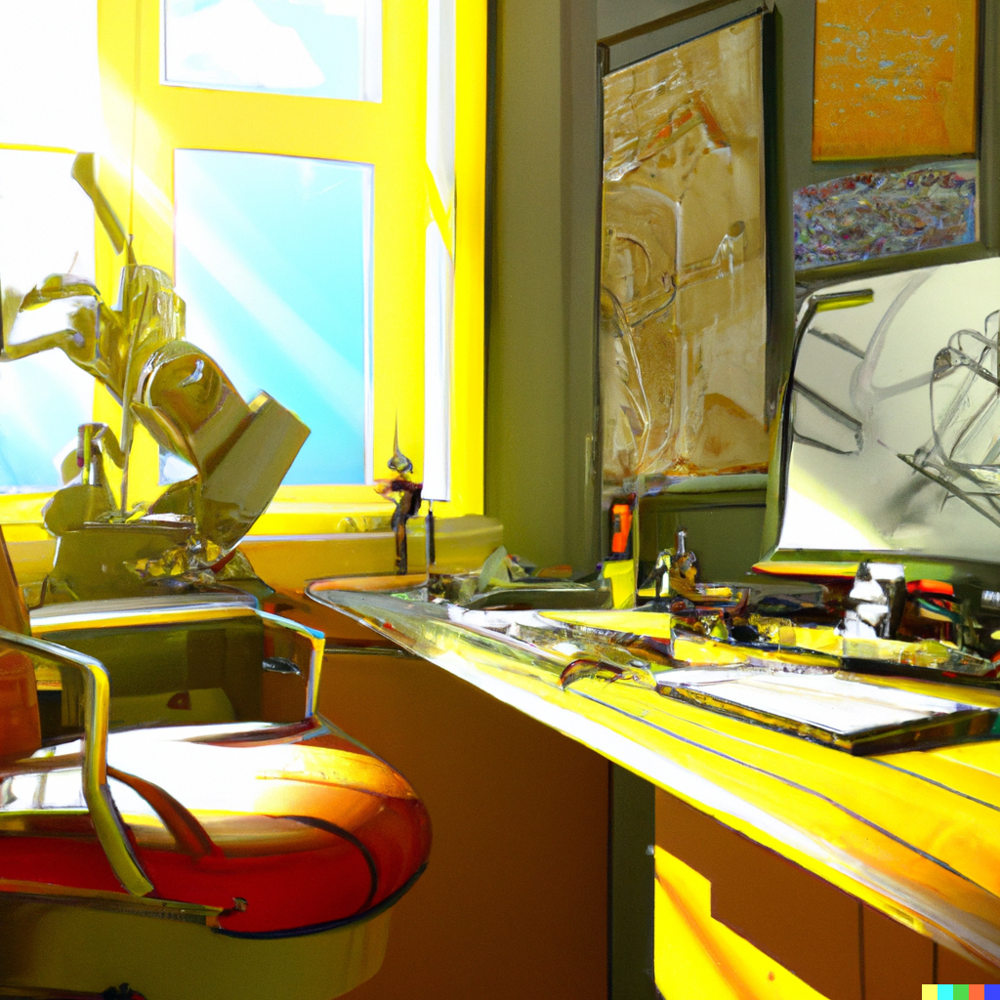
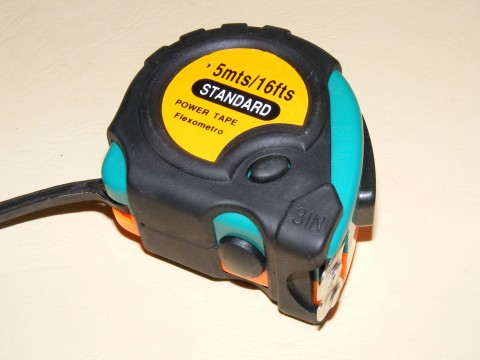
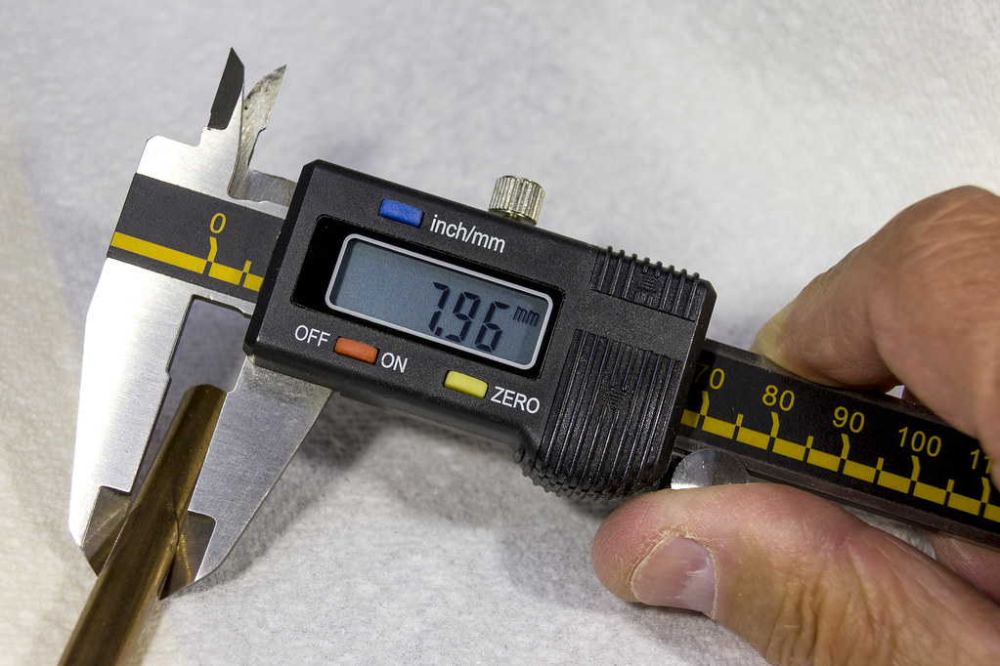
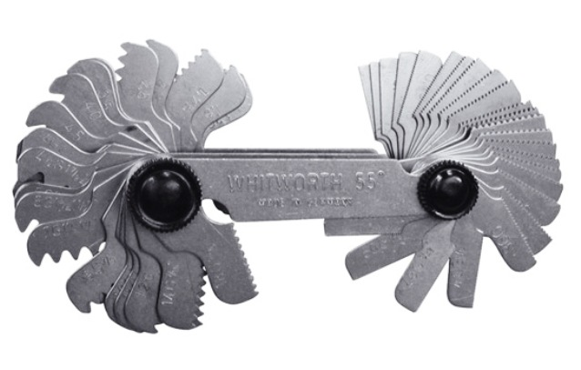
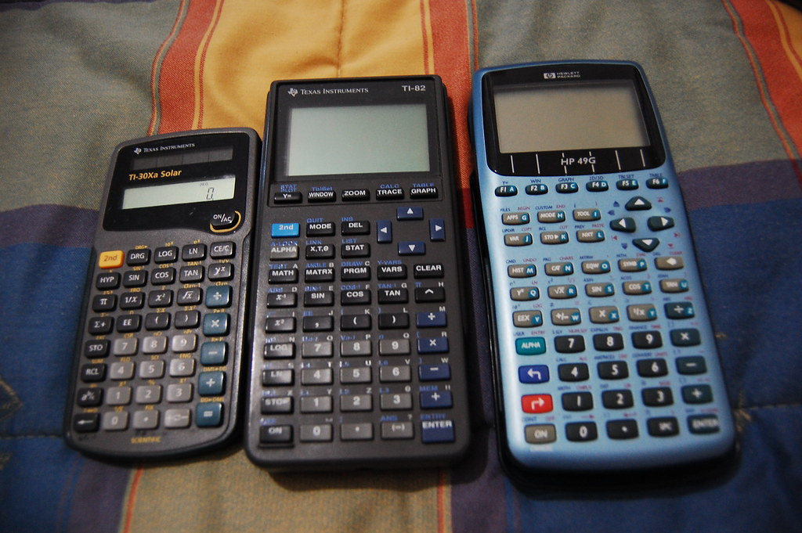
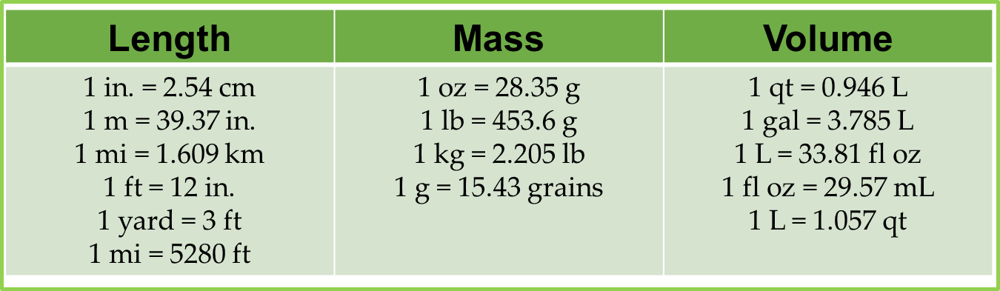
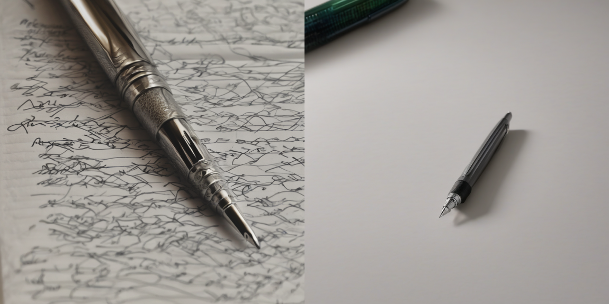

Mi Blog

10 Herramientas para el diseñador digital.
01-Jan-2045
Web Design
15 Comments
Primero debo comenzar con mi definición de herramienta y siento que precisamente es algo que me ayuda a realizar mi trabajo de manera más eficaz y eficientemente no importante si es un desarmador para soltar esa tapa del objeto que estas dibujando ó una taza de café para mantenerte despierto.
Muchísimas veces al sentarme al modelar en la PC me topo con ciertas dificultades que distraen y retrasan o entorpecen el proceso creativo.
Muchas veces me ha pasado que me siento en la computadora y siento como mi mente o comienza a distraerse y pierde el ritmo de los pensamientos que quiero hilar para expresar un Concepto.
Estas son algunas de las herramientas que con el pasar de los años que comenzado a agarrarle aprecio.
1.-Una buena taza de Café
Una forma sencilla de mantenerte ocupado y alerta es una buena taza de cafeína. La única desventaja es cuando viene el bajón de cafeína y andas como muerto viviente el resto de la tarde. Pero de esta forma mantengo mi mente ocupada en el trabajo actual.
Cabe enfatizar que lo que estas leyendo es solo el resultado de mis experiencias como diseñador mecánico y no necesariamente sena aplicables a ti, si no te encanta el cafe siempre puedes probar con un té caliente, o alguna infusion de tu preferencia.
2. La ubicación de el área de trabajo.
Puede parecer trivial pero debo mencionarlo como una herramienta porque ayuda a mantener la concentración sin cortar la creatividad. Estar trabajando desde casa me ha enseñado que no es lo mismo trabajar en completo silencio que con música de fondo o con televisión encendida viendo hacia una ventana. O hacia una pared. Cada detalle puede influir en el resultado del diseño y este detalle variará específicamente de persona a persona tienes que comenzar a notar cuando trabajar de manera seguida durante horas. Que te ayuda a mantener la concentración? El ruido blanco? El silencio? Luz fría, luz cálida luz o natural? En un sofá lleno de almohadas o en la silla del comedor? Encuentra ese lugar de la casa donde puedas estar completamente metido en el trabajo actual. En muchos momentos durante el día puedes tomarte 5 minutos y voltear a la ventana despejar tu mente de las ideas de la pantalla. Un ejercicio yo hago es tratar de ver todos los detalles que pueda del árbol fuera de la ventana de la casa, después de ver superficies digitales o números crudos. A veces algo orgánico y natural, calma la mente y puedes regresar con alguna idea fresca de cómo atacar el problema.
3.- un flexómetro
Una regla, una cinta métrica o flexómetro de los más baratos. Usualmente como diseñador mecánico me toca la tarea de fabricar algo más grande que yo y necesito ver físicamente como quedaría un pedazo de tubo de 1.25 mts. Es muy útil tener en el escritorio o junto a la laptop algo para medir distancias cerradas mayores a 1 mm.
4.- Un vernier
El vernier, calibrador ó pie de rey es una herramienta usada por lo general en metrologia y por lo tanto pueden ser muy caros y costar cientos de dólares. Pero eso no es lo que pretendo que compres…. Consíguete un vernier de plástico como el que ocupan lo ortodoncistas para tomar medidas de los dientes. O un vernier digital de los chinos. Que se descalibra cada que abres el vernier. No necesitas toda la exactitud del mundo. El objetivo es medir fracciones de milímetro de manera más simple y rápida. Para saber si la tolerancia que estás considerando será suficiente para ese tornillo o tuerca que vas a comprar.
5. Gauges para roscas y radios.
Algunas herramientas poco comunes en cuanto a diseño mecánico son los gauges de roscas y radios. Estas son herramientas ocupadas en el área metal mecánica para medir de manera rápida y eficiente las cuerdas de roscas internas o externas de la pieza a replicar asi como esa esquina redondeada que no sabes qué dimensión le dieron al radio.
6.- Calculadora.
Parece trivial pero una calculadora de 10 pesos ha sido mi mejor herramienta cuando se trata de calcular un área un volumen de manera rápida y confiable para poder confirmar que mi diseño cumple ciertos requisitos dimensionales o de tolerancias. Una regla de 3 y a lo que sigue. Nadie dijo que tiene que ser. La calculadora casio o Sharp graficadora de última generación con 10 dígitos de exactitud. Ni siquiera tiene que ser física. Bien puedes usar las calculadora del celular siempre y cuando no te distraigas viendo Facebook.
7.-Factores de conversion
Algo muy obvio pero que a veces se nos olvida es que no somos robots y no siempre nos acordamos de los factores para convertir bares a psi, watts a HP por ejemplo es algo muy común. Ya sean en tablas físicas para usar en conjunto con la calculadora del celular o de manera digital son en extremo útiles. A continuación te dejaré ligas a los recursos que yo más he utilizado.
Verdad que es bastante información?, no te desesperes volviendo a esa pregunta inicial, tienes dos opciones ir a la página de la marca de. Ese objeto y rogarle a Dios que en el mejor de los casos ya tengan el modelo 3d cargado para descargar o tengan un catálogo digital con los planos en 2d disponibles para descargar. A continuación te dejaré los links que yo ocupo más seguido para consultar dimensiones de accesorios mecánicos. También tienes a tu disposición aplicaciones de celular donde puedes consultar medidas estándares de tornillos tuercas arandelas, y pernos de todas medidas.
8.- Idiomas
Ya sé que sueno como a mamá, diciendo esto pero en verdad lo mejor que puedes hacer como profesionista es perderle el miedo a entender otro idioma, en mi experiencia el 99.9% de la información relevante sobre diseño e ingeniería de diseño de máquina están en otro idioma, en el mejor de los casos en inglés, sin embargo no está de más que tomes una clase de Chino para aprender a interpretar ese diagrama de la máquina que pediste por alibaba hace 3 meses y acaba de llegar y ahora te toca usar.
10.-Papel y lapiz
Por último pero no menos importante está el papel y lapiz. Ya que estamos hablando de software y aplicaciones y entornos digitales de trabajo, tal vez lo más infravalorado en tu escritorio es un pedazo de papel y algo con lo que tomar nota…. Hacer talvez un pequeño diagrama, anotar una idea alterna que puedes intentar otra sesión. Anotar una dimensión. Muchas otras ideas que a lo mejor descartaste por hacerlo con tus conocimientos actuales…. Nunca descartes que pu3des aprender cómo hacerlo mejor otro día. Hacer un dibujo a mano alzada tan sencillo como una caja en perspectiva hecha con líneas puede ayudar a clarificar una idea y acelerar el proceso de modelado.
En el siguiente link les compartire el acceso a mi nube personal con los libros que he ido recolectando durante mi formacion y experiencia como profesionista.
Libros© Your Site Name. All Rights Reserved. Designed by HTML Codex